Real-Time Fluorometer (RTF) Installation
Purpose
This procedure provides instructions to install Real-Time Fluorometers (RTFs) on Amplification Incubators. RTFs allow systems to run real-time assays such as BV, CV/TV, HSV, HIV-1, HBV, and HCV.
Parts and Materials Required
- Proper PPE
- FSE Tool Kit
- (12) AMP INC Foam Plastic Rivet
- (8) M3x6 SHC screws (included with each Fluorometer Assembly)
- (1) Panther Fluorometer Assembly, 677 (Required for BV, CV/TV )
- Panther Fluorometer Installation Kit
- (1) Panther Fluorometer Assembly, FAM
- (1) Panther Fluorometer Assembly, HEX
- (1) Panther Fluorometer Assembly, ROX
- (1) Cable, Panther Fluorometer
- (1) RTF Alignment Tool
| |

|
Note—The RTFs can be ordered as kit or individually. |
Time Required
- 60 minutes including Alignment Procedure
Procedure

|
WARNING—The AMP incubator contains amplicon and is a post AMP (dirty) module. Ensure safe lab practices are observed during this procedure and always wear PPE. Change gloves often, bleach tools after interaction with the Amp Incubator and always bleach tools after every service. |
|
|
WARNING—MTUs may be present in module.
Remove all MTUs to avoid contamination. |
- Power on the Panther System and PC.
- Start Panther Main and allow the system to initialize.
- Check to make sure all MTUs are cleared from the system.
- Shutdown Panther Main, and power down the Panther System and PC.
- Prepare the work surface:
- Clean a flat and stable laboratory work surface with 2.5%-3.5% sodium hypochlorite solution.
- Wait at least 1 minute and then clean the surface with DI water. Do not allow the sodium hypochlorite solution to dry on the work surface.
- Open the Mid-Bay Drawer
- Remove the Amplification Incubator.
 Place the Incubator module upside down on clean bench pads. The three RTF labels shown here on the Incubator represent the installation location of the three individual RTFs.
Place the Incubator module upside down on clean bench pads. The three RTF labels shown here on the Incubator represent the installation location of the three individual RTFs.
|
|
Note—The HEX RTF location is closest to the PCB and the FAM RTF location is closest to the door. |
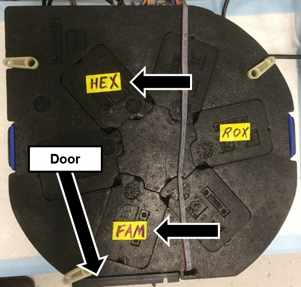
- Remove the three or four foam inserts from the locations indicated in Step 8. For each location, visually verify there are two dowel pins, and the pins and mating surface are clean and clear of debris.
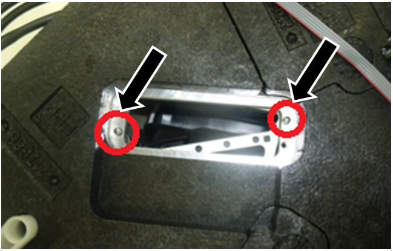
- Remove each RTF from its packaging and verify the DIP Switch settings on each RTF matches the settings in the table.
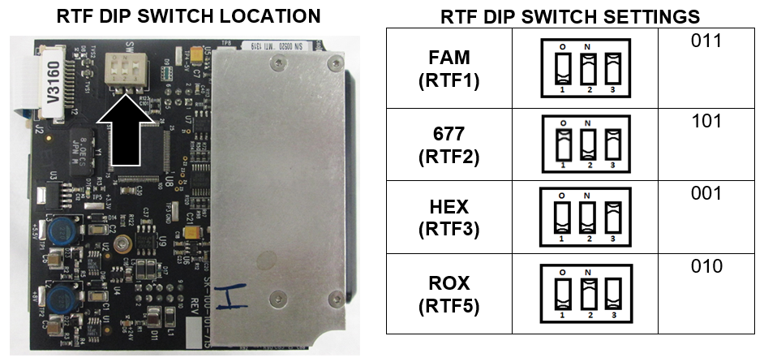
- Match the Serial number of each RTF to its packaging, and document the serial number in the Service Notes.
|
|
Note—The table below is useful for RTF identification using the OTMI number: |
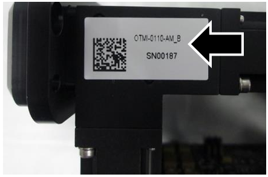
- Label each RTF with a Sharpie on the metal side as shown, with the specific RTF name, installer’s initials, and date.
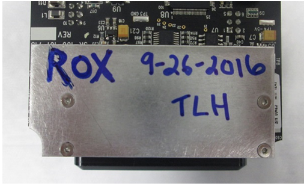
- Check the lenses of all RTFs for any debris or dust. If dirt or dust is found, clean the lens with a lens cloth only.
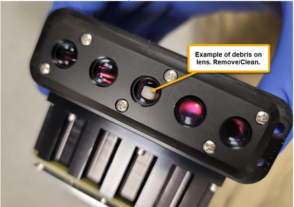
- Verify the dowel pins are clean and there is no debris on the mating surface.
- Secure each individual RTF to the incubator using two M3x6 screws as shown.
|
|
Note—The RTFs should require minimal effort to seat and should sit flush on the mounting surface.
Forcing the RTFs into position can damage the PCB. RTFs that are not seated flush may have inaccurate channel readings.
|
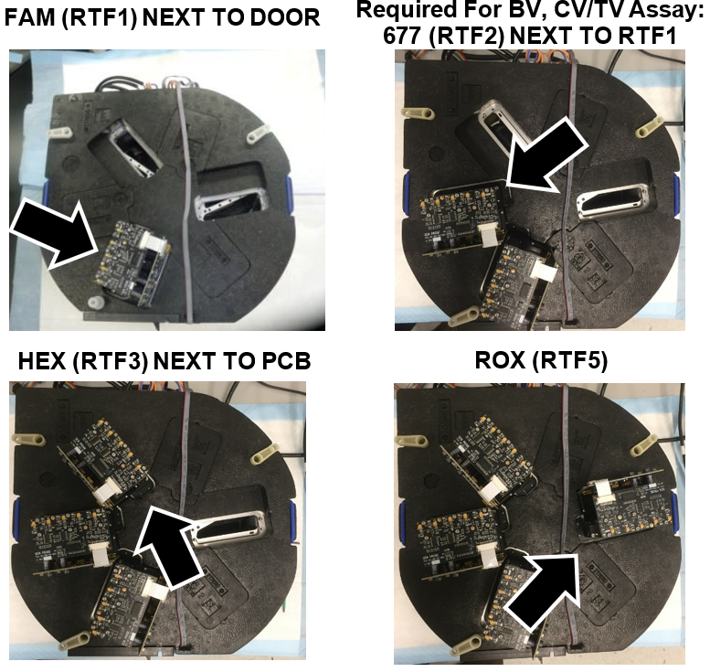
- Verify the RTFs are installed in the correct location as shown.
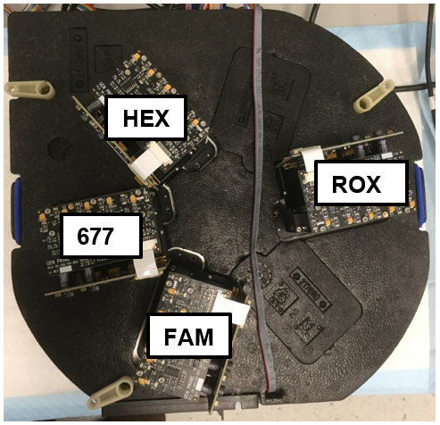
- Connect the RTF’s using the RTF cable.
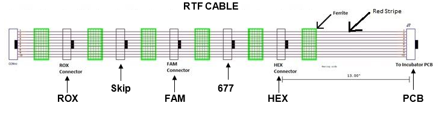
|
|
Note—If the orientation is not correct on the cable, and the FSE forces the connector, the solder on the board can break and turn the RTF dead on arrival. |
- First connect the RTF cable to the Incubator PCB.
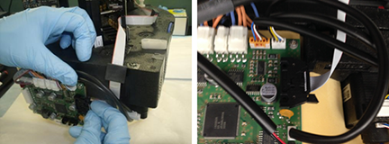
- Connect the HEX RTF next with the first available connector.
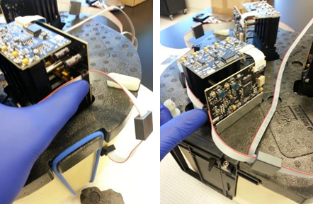
- Connect the 677 RTF to the next available connector (Required for BV, CV/TV Assay).
- If NOT installing the 677 RTF, skip one connector.
- Connect the FAM RTF to the next available connector.
- Skip one connector.
- Connect the ROX RTF to the next available connector.
- Route the cables as shown below.
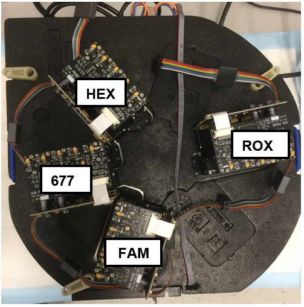
- Carefully turn the incubator over right side up.
- Open the Incubator door, inspect and ensure each magnet inside the AMP Incubator is flush with the magnet holder as shown. Adjust the magnets if necessary by re-positioning the magnet with a gloved finger, no tools required.
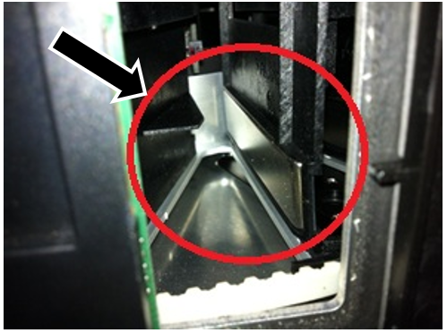
- Re-install the Amplification Incubator.
- The RTF hardware installation is complete.
- Power up the Panther System and PC, and login to the FSE Shield.
- Start Service Software.
- On the Incubator tab, click on Parameter tab.
- Select Amp Incubator ID 0x22 in the Device dropdown menu.
- Change the Authorization Code field to “1”
- Click on the Set button.
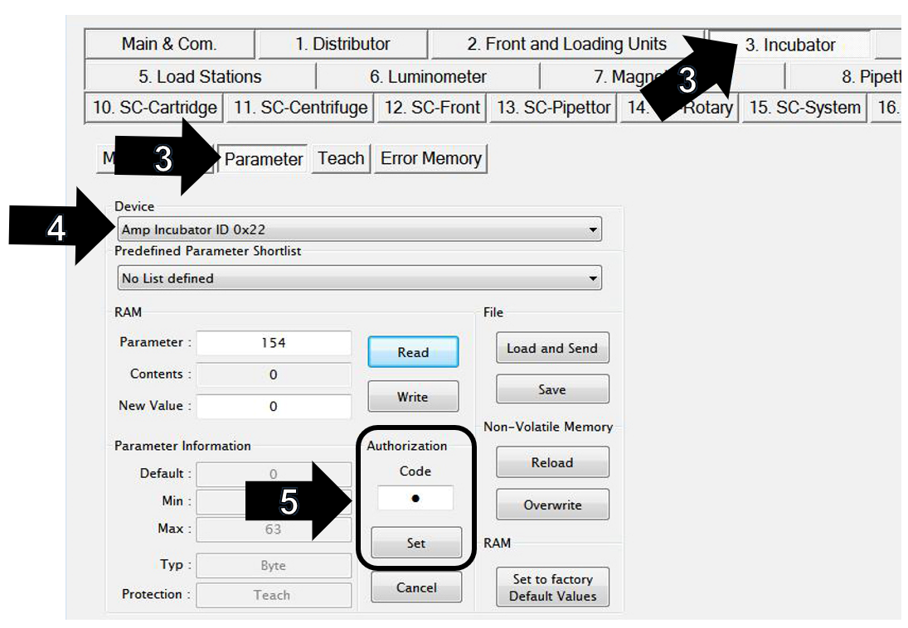
- Click on RTF.
- Under RTF Cfg, check the boxes next to 1, 3, and 5.
- Check the box next to 2 if installing 677 RTF (Required for BV, CV/TV Assay).
- Click the Set button.
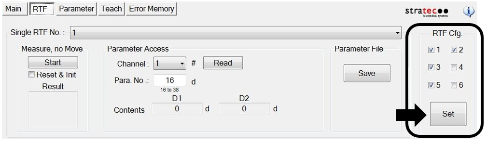
- A Service Software window will display “This operation needs authorization to write teach parameter.”
- Click OK.
- Another Service Software window will then display “Write all Parameters to NVM?”
- Click OK.
- Click on Parameter and verify Amp Incubator ID 0x22 in the Device dropdown menu is still selected.
- Enter 154 in the Parameter field.
- Click the Read button.
- Verify the New Value is “21”.
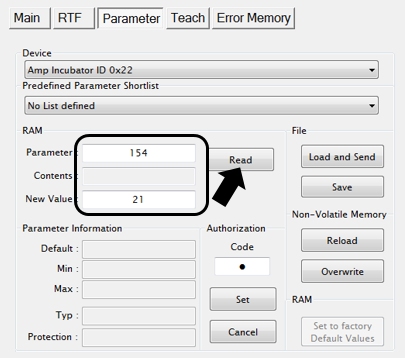
- If 677 RTF (required for BV, CV/TV Assay) is installed the new value will be “23”.
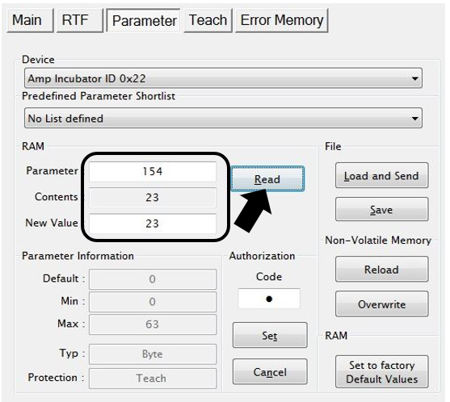
- Close Panther Service Software.
- Power cycle the Panther System.
- Start Service Software.
- Click on the Incubator tab.
- Select the AMP incubator from the dropdown box, as shown below.
- Click Initialize.
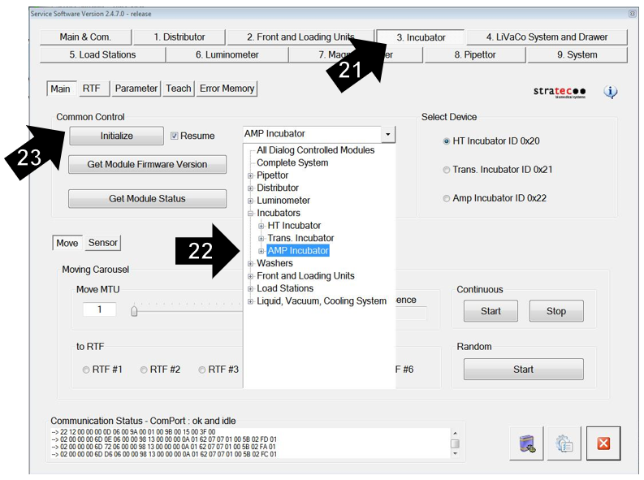
- Go to the Parameter tab.
- Select Amp Incubator ID 0x22 in the Device dropdown menu.
- Input “154” into the Parameter field.
- Click on the Read button and ensure the parameter value is still “21”.
- This value will be “23” if 677 RTF is installed (Required for BV, CV/TV Assay).
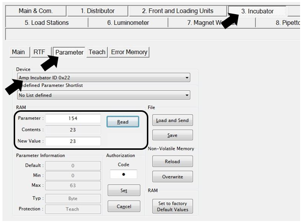
- Click on the RTF tab and ensure that the 1, 3, and 5 are still checked in the RTF Cfg. section.
- Make sure the box next to 2 is checked if 677 RTF is installed (Required for BV, CV/TV Assay).
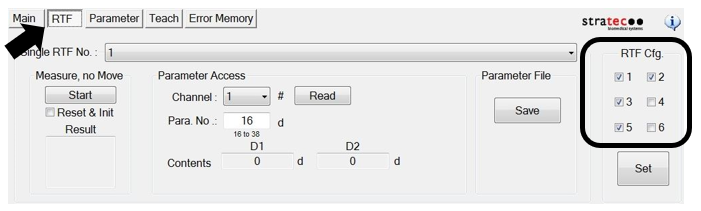
- Verify nominal channel values for each RTF.
| Note—The Amp Incubator temperature should be stabilized, and RTFs warmed up to get accurate channel values. This usually takes 20-30 minutes after initialization.
(Temp. should be 42.4 – 43.0°C)
|
- Select the "1" in the Single RTF No. drop-down. Click on the Start button under Measure, no Move. Verify the values in the Result field are in range.
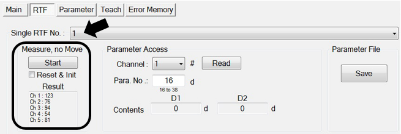
- Required For BV, CV/TV Assay: Select the "2" in the Single RTF No. drop-down. Click on the Start button under Measure, no Move. Verify the values in the Result field are in range.
- Select the "3" in the Single RTF No. drop-down. Click on the Start button under Measure, no Move. Verify the values in the Result field are in range.
- Select the "5" in the Single RTF No. drop-down. Click on the Start button under Measure, no Move. Verify the values in the Result field are in range.
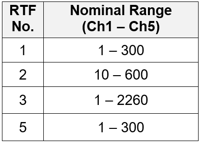
| Note—If any RTF reports values out of range, the RTF must be replaced. Document and label the RTF for return. |
- Exit Panther Service Software.
- Run Panther Instrument Firmware Setup.
| Note—This will load firmware onto the RTFs. |
- Start Panther Service Software.
- Initialize the Distributor and AMP Incubator.
- Click on the Distributor tab.
- Click on Parameter.
- Set the Authorization Code to “1”.
- Re-Teach the Linear Distributor to the AMP incubator.
- Click on Teach.
- Select “Sledge” from the Select Drive drop-down.
- Select “AMP Incubator” from the Select Position drop-down.
- Click once (to highlight) the Execute Position Autoteach option in the Options for selected Drive and Device menu.
- Click on the Execute button.
- Click on the Yes button after process is complete, to save parameters to NVM.
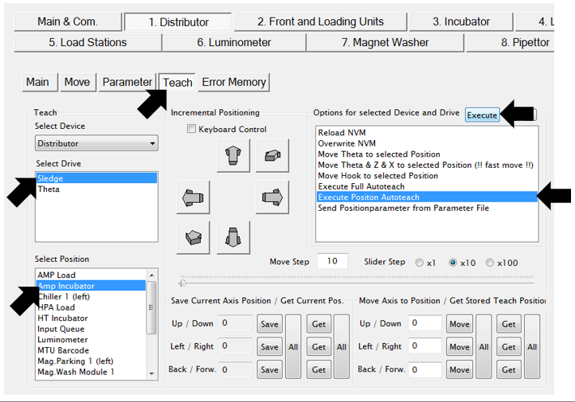
- Click on the Incubator tab.
- Select the Main tab.
- Click on the Sensor tab.
- Select Amp Incubator ID 0x22 in the Select Device section.
- Click on the Read button.
|
|
Note—Incubator temperature reaches nominal range within 20 minutes (42.4 – 43.0 °C). |
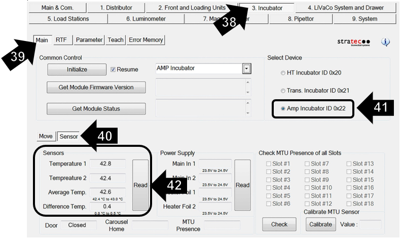
Step 43 is only for RTF installation on a NEW incubator.
Slot Alignment is NOT necessary if upgrading an existing incubator.
If upgrading an existing incubator, skip Step 43 and proceed to Step 44.
- Complete the Incubator Slot Alignment procedure.
| Note—This needs to be done before the distributor is taught to the incubator. |
- Complete a one cycle System Level Operational Qualification (OQ) procedure for the AMP incubator only.
- Close Panther Service Software.
- Run the Panther RTF Aligner Program.
- The RTF software configuration is complete.
- Open the PANTHER Main Software and verify that the instrument starts with no errors.
- Click on the Help button.
- Click on the About button.
- Check the Module Information option.
- Verify there are three RTF modules listed as Rtf1, Rtf3, and Rtf5.
- Rtf2 will be listed if 677 RTF is installed (Required for BV, CV/TV Assay).
|
|
Note—These modules should have the firmware version shown in the box below. |
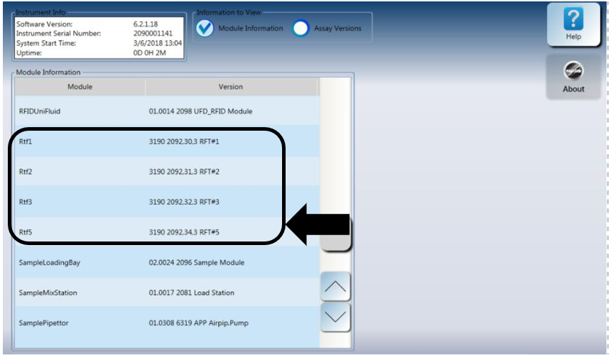
- Perform a real-time assay Performance Qualification (PQ).
 button at the top of the page to send feedback, comments, or change requests.
button at the top of the page to send feedback, comments, or change requests.